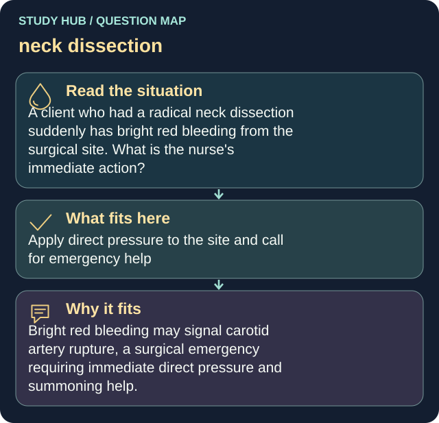

A client who had a radical neck dissection suddenly has bright red bleeding from the surgical site. What is the nurse's immediate action?
Answer
Apply direct pressure to the site and call for emergency help
Reasoning
Bright red bleeding may signal carotid artery rupture, a surgical emergency requiring immediate direct pressure and summoning help.
Why the other answers do not fit
- Document and reassess in 15 minutes
- Offer the client oral fluids
- Leave to gather supplies before intervening
Shared reasoning for choices without a separate note: Bright red bleeding may signal carotid artery rupture, a surgical emergency requiring immediate direct pressure and summoning help.
